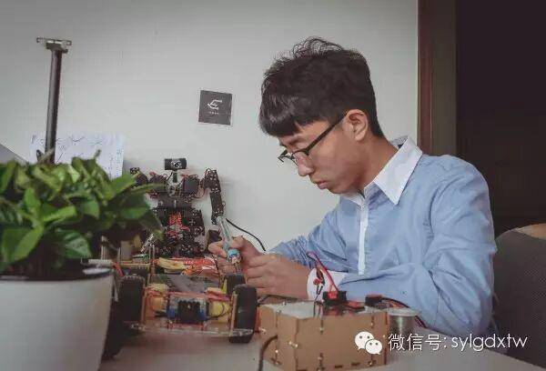
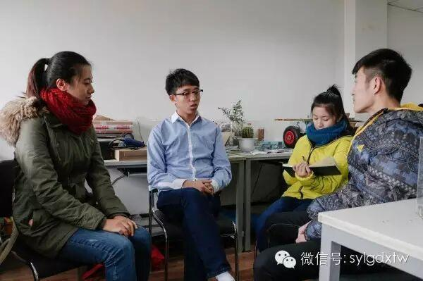

电协访谈
与有肝胆人共事，从无字句处读书——电子技术与应用协会会长冀冲访谈录
2015-11-26 沈阳理工大学团委


走进文体中心311，就看到电子技术与应用协会的会长冀冲在焊接电路板，专注的神情、娴熟的手法让我们不忍唐突打扰。当他放下手中的烙铁，坐下来和我们一起聊天的时候，我们才走进这个“技术宅”的内心世界，同时，电子技术及应用协会的大门也缓缓向我们打开……

只有深入和一个人交谈，你才会知道他的故事到底有多精彩，你才能知道他在你能了解到的一面之外，依然是那么的优秀。管理着一个社团，研究着复杂的程序以赋予他亲手焊接的机器人、飞行器以生命，他和他的团队制作的机器人获得过沈阳市“福田杯”机器人大赛第二名，辽宁机器人大赛省三等奖、电子设计大赛省二等奖等各种奖项，如果你感觉这些已经足够狂拽酷炫。。。那么，他还是一个标准的学霸，连续两年获得国家励志奖学金，他还在院学生会信息部担任部长，玩得了单反，剪得了视频，他坦然的说，大学生应该经历的事情，我都没有错过。
135编辑器
关于社团
谈起社团，冀冲会长提及次数最多的三个词就是“责任、感情、家”。“从进入社团起，我就爱上了这里的一切，这里给我家的感觉，同时，在社团低迷期的时候，我也常常在想，为什么这么好的一个社团，为什么不能吸引更多的同学参与进来。
当我成为了电协的会长，这种感情就变成了我的责任。我们社团有自己独一无二的特色——电子技术。所以，为了扩大协会在校园里的影响力，今年我们在军训结束之后在文体广场举办了“电协力量”展示会，吸引了很多同学前来参观，同时，现在电子技术与应用社团主办的校级“机器人大赛”，更是给同学们提供了一个了提高自身能力、培养团队协作精神的舞台，也希望同学们能够在12月13日来到文体中心观看机器人大赛的决赛。电协的大门常打开，不管你是大几，只要你对电子技术感兴趣，随时可以来电协找我们，我们给你一个家。”朴实的话语道出社团成长路上的艰辛，同时，我们透过会长坚毅的眼神，也坚信电协的未来会越来越好。
“电协力量”展示会剪影
关于团队
因为电协成员经常要参加各种电子技术类比赛，所以团队也成为了电子技术与应用社团的一大特色。冀冲会长对于自己的团队是这样介绍的：“我们常常因为意见不合、创意不同而争吵，但我们从来不因为某个环节出问题埋怨过个人。我们是一个team，我们一起熬夜做设计，我们一起吃泡面焊电路，我们可能还没来得及同甘，但我们起码一起共苦。感谢团队的成员们陪我一起苦中作乐。也希望以后社团的每支团队也都能做到一起担责，一起拼搏，一起享受胜利的喜悦，请一定记住，你们是一个团队。从团队中收获友谊，从书本外收获知识，这将是电协给你们最宝贵的财富。”
会长寄语
真诚做人，务实做事。
与有肝胆处共事，
从无字句处读书。
文/团媒中心 张茂壮
岳 敏
图/团媒中心 张雪明
社团联合会 方小玉